Jubiler i antykwariat w Krakowie, przy Rynku od 1934 roku
Złoto, srebro, brylanty, zegarki i antyki. W pracowni naprawiamy, zmieniamy rozmiar, wykonujemy obrączki i grawerujemy ręcznie.
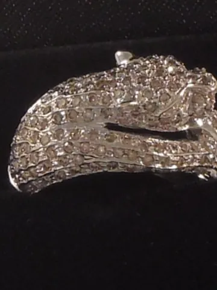
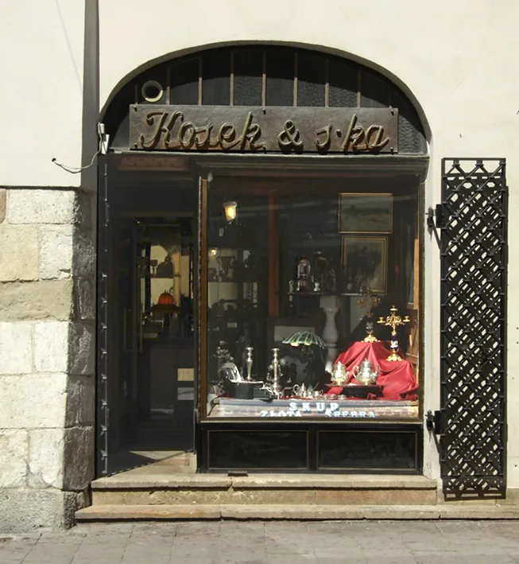
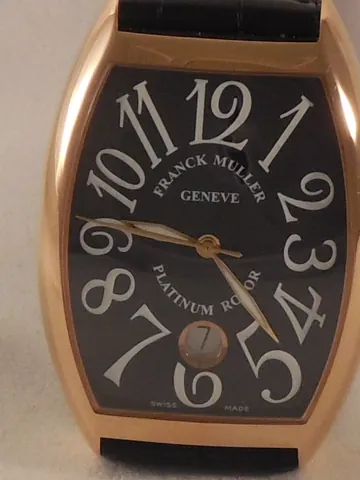
Cztery działy, jeden adres
Od pierścionka zaręczynowego po srebrną zastawę i obraz do salonu. Wszystko można obejrzeć na miejscu, tuż przy Rynku Głównym.
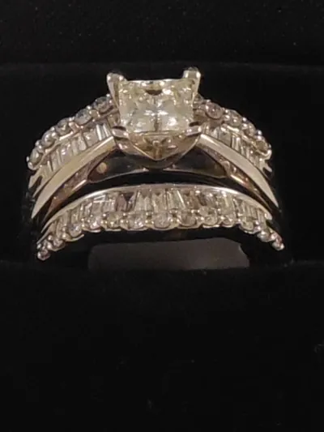
Biżuteria
Złoto, brylanty, szafiry, korale, biżuteria dawna i współczesna.
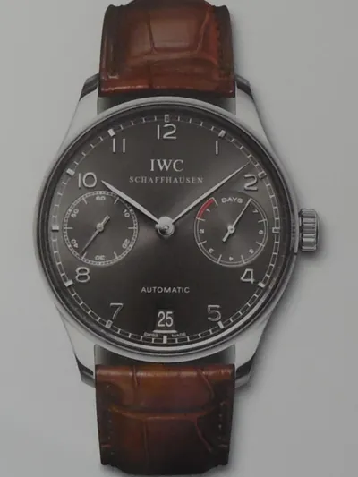
Zegarki
IWC, Omega, Longines, Tissot i inne, także używane i kolekcjonerskie.
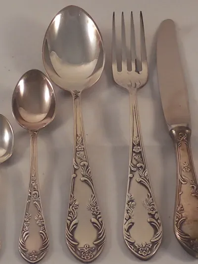
Srebro
Sztućce, tace, cukiernice, szkatułki i srebro stołowe.
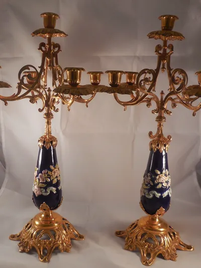
Antyki i obrazy
Antykwariat od 1989 roku: porcelana Meissen, obrazy, przedmioty z historią.
Teraz w witrynie
Wybór z naszej oferty. Antyki i biżuteria dawna to często jedyne egzemplarze, dlatego przed przyjazdem prosimy o telefon: potwierdzimy, czy przedmiot wciąż czeka.
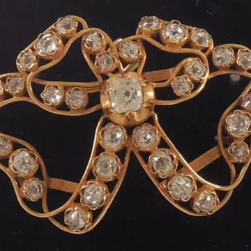
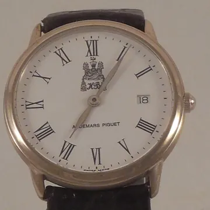
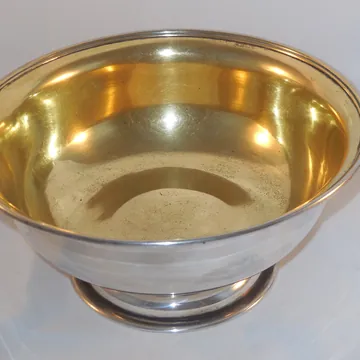
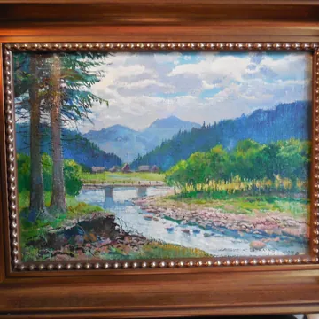
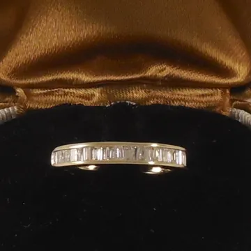
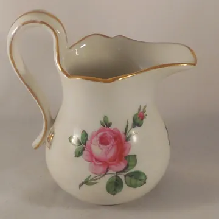
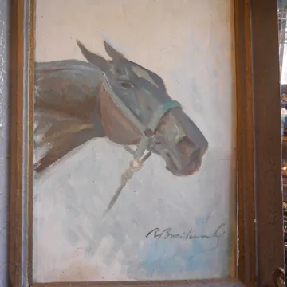
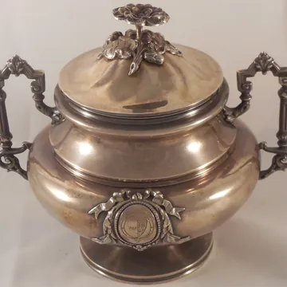
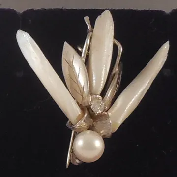
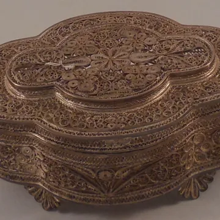
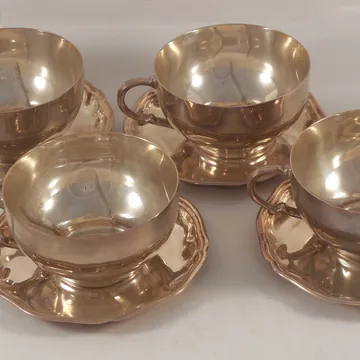
Pracownia jubilerska i zegarmistrzowska
Biżuteria, która ma przetrwać pokolenia, czasem potrzebuje rąk jubilera. Naprawy i przeróbki robimy na miejscu, przy Rynku.
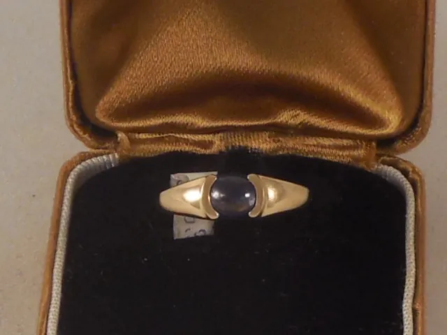
- Obrączki ślubne według własnego projektuKształt, kolor złota i wykończenie ustalamy razem.
- Zmiana rozmiaru pierścionka i obrączkiZmniejszenie albo powiększenie.
- Naprawy wyrobów ze złota i srebraŁańcuszki, zapięcia, bransoletki, oprawy kamieni.
- Posrebrzanie i złocenieBiżuterii oraz wyrobów korpusowych, np. srebra stołowego.
- Ręczny grawerKaligrafia na obrączkach, medalikach, zegarkach i innych przedmiotach.
- Bateria i pasek w zegarkuWymiana od ręki.
- Naprawy zegarmistrzowskieZegarki mechaniczne i kwarcowe.
- Wycena biżuterii i kamieni szlachetnychTakże sprawdzenie autentyczności, czyszczenie i konserwacja.
Rzeczy, które przetrwały
Firma Jubilerska Kosek działa w Krakowie nieprzerwanie od 1934 roku. Przetrwała okupację i czasy stalinizmu, a szyld „Kosek & s-ka” nad witryną przy Szewskiej pamięta niejedno pokolenie klientów. Złoto, srebro i dobre zegarki też trwają dłużej niż moda, dlatego tak dobrze czują się obok antyków.
- 1934Początek Firmy Jubilerskiej Kosek w Krakowie.
- 1989Działalność poszerzona o antykwariat.
- DziśSklep, pracownia i antykwariat przy Rynku Głównym, ul. Jagiellońska 6/6a, wejście od Szewskiej 11.
Zapraszamy do sklepu
- Adres
- ul. Jagiellońska 6/6a (wejście od ul. Szewskiej 11)
31-010 Kraków - Telefon
- 12 422 54 17
- kosek.sklep@gmail.com